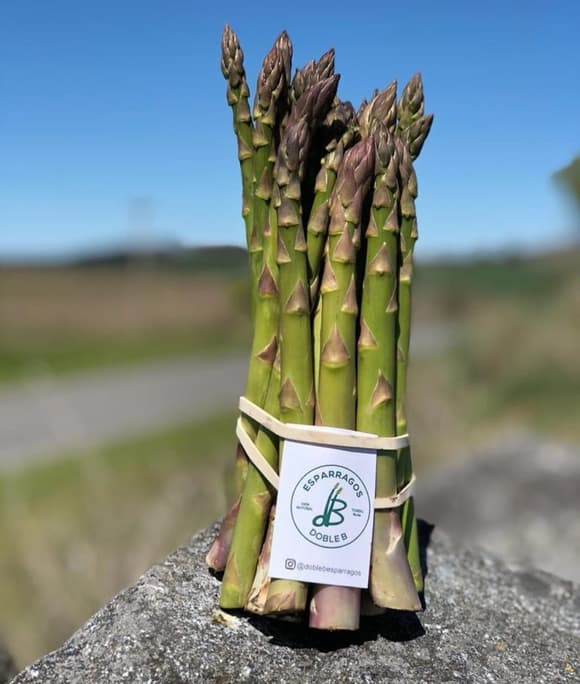

PRODUCCIÓN Y CLASIFICACIÓN DE ESPÁRRAGOS FRESCOS DE PRIMERA CALIDAD
¿Cuáles son los beneficios de comer espárragos?
Los espárragos contienen gran cantidad de nutrientes, especialmente los verdes. Además, al presentar pocas grasas, son recomendabless para personas que realizan dietas destinadas a combatir el sobrepeso.
Asimismo, se trata de un alimento que contiene fibra, que ayuda a combatir el estreñimiento y regular el tránsito intestinal. También es diurético, por lo que es conveniente para eliminar toxinas de nuestro organismo.
Del espárrago se destaca la gran cantidad de antioxidantes que ayudan a retrasar los signos de envejecimiento celular.
Por otro lado, son ricos en vitaminas C y E que refuerzan el buen funcionamiento del sistema inmune de nuestro cuerpo.